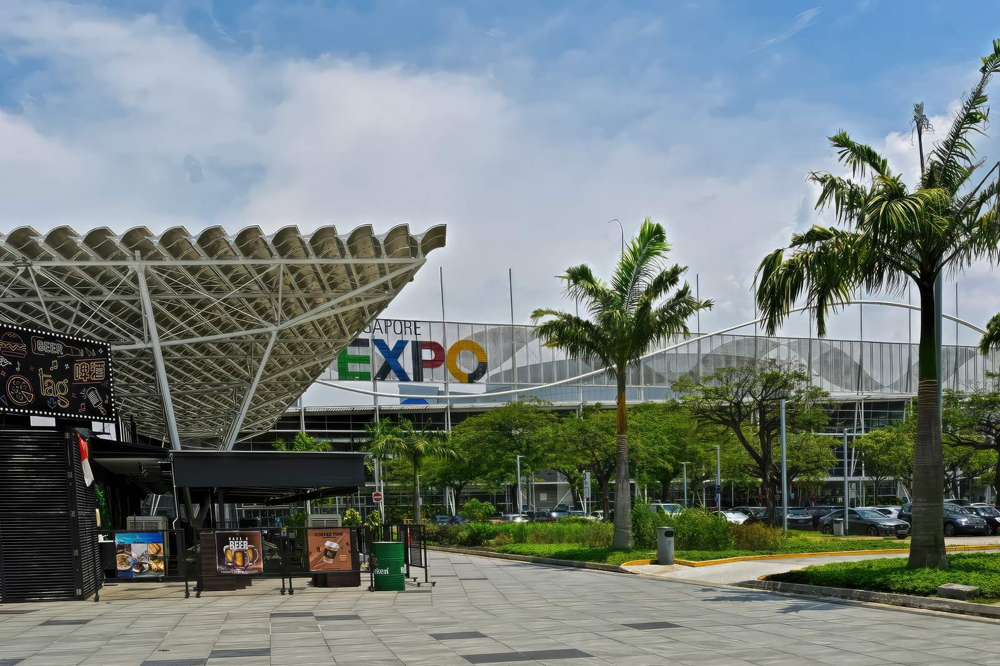
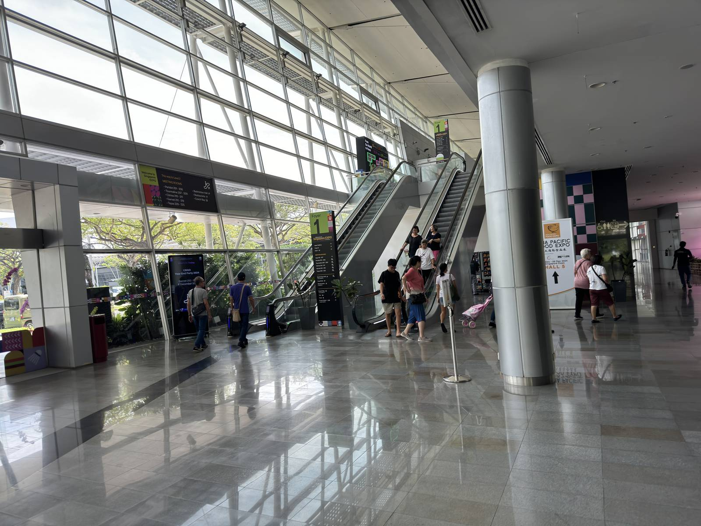

Venue · Exhibition grounds
Singapore EXPO
- Type
- Exhibition grounds
- Location
- Singapore, Singapore
- Address
- 1 Expo Drive, Singapore 486150
- Capacity
- 9,000 capacity
- Halls
- Official about page: 10 halls, 32 meeting rooms and 2 concert venues across 123,000 m² of interconnected indoor and outdoor space
- Official website
- https://www.singaporeexpo.com.sg/
About
Singapore’s largest purpose-built MICE venue, in the Changi precinct next to Expo MRT. Official hall pages give each of Halls 1–10 and Apex @ EXPO up to 10,000 m² and up to 9,000 pax (Halls 1–6: 10–16 m ceiling; Halls 7–10: 8–10 m). A combined indoor exhibition total is not published as a single official figure, and the 123,000 m² figure is stated as indoor and outdoor space, so exhibition_sqm is left null. Headline capacity_max_delegates is the official per-hall / Apex maximum of 9,000; a combined all-halls delegate total is not published. The official 2026 sales and Apex brochures are stored. The atlas event Asia Tech x Singapore 2027 is listed at Singapore EXPO (ATxEnterprise) and Capella Singapore (ATxSummit) and is linked on both records. Coordinates are the atlas precise pin.
Spaces
| Name | Type | Capacity | Area |
|---|---|---|---|
| Halls 1–6 (each) | — | 9,000 | 10,000 m² |
| Halls 7–10 (each) | — | 9,000 | 10,000 m² |
| Apex @ EXPO | — | 9,000 | 10,000 m² |
| Halls G, H, J (combined) | — | 220 | 302 m² |
Official documents
Upcoming events
- FHA-Food & Hospitality Asia 2027Singapore, SingaporeExpos
- Asia Tech x Singapore (ATxSG) 2027Singapore, SingaporeTech
Sources
- Official source — https://www.singaporeexpo.com.sg/about-us/
- Official source — https://www.singaporeexpo.com.sg/venue-spaces/exhibition-halls/
- Official source — https://www.singaporeexpo.com.sg/wp-content/uploads/2026/07/Singapore-EXPO-Sales-Brochure.pdf
- Official source — https://www.singaporeexpo.com.sg/wp-content/uploads/2026/07/Singapore-EXPO-Apex-@-EXPO-Brochure.pdf